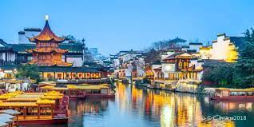
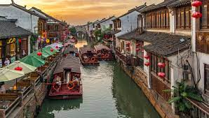
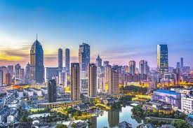
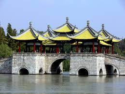

Welcome to Nanjing, the ancient capital of China. Nanjing is known for its rich history and cultural heritage. Explore the city's iconic landmarks, such as the magnificent Nanjing City Wall and the famous Confucius Temple. Don't miss the chance to visit the impressive Sun Yat-sen Mausoleum and stroll along the picturesque Xuanwu Lake.
Discover the charm of Suzhou, often referred to as the "Venice of the East." Suzhou is renowned for its classical gardens, elegant canals, and traditional architecture. Take a leisurely boat ride on the enchanting Grand Canal, visit the UNESCO World Heritage-listed Humble Administrator's Garden, and immerse yourself in the beauty of the Master of the Nets Garden.
Experience the modernity of Wuxi, a vibrant city known for its stunning Taihu Lake and thriving industries. Explore the picturesque Turtle Head Isle and enjoy panoramic views of the lake. Don't miss the magnificent Lingshan Grand Buddha, a towering statue that stands as a symbol of peace and prosperity. Wuxi is also famous for its delicious local cuisine.
Changzhou offers a perfect blend of natural beauty and cultural heritage. Explore the scenic beauty of the renowned Tianmu Lake, surrounded by lush mountains. Visit the historic Tianning Temple and marvel at the majestic Tianning Pagoda, one of the tallest pagodas in China. Enjoy a peaceful stroll along the beautiful Hongmei Park and experience the city's serene charm.
Immerse yourself in the historical charm of Yangzhou, a city known for its splendid gardens, ancient temples, and picturesque waterways. Explore the enchanting Slender West Lake, famous for its poetic landscapes. Visit the magnificent Daming Temple, a cultural and architectural masterpiece. Experience the city's rich cultural heritage by strolling through the charming Dongguan Street.
Help us improve our services by participating in our survey. Your feedback is valuable to us. Please take a few moments to answer some questions and share your thoughts. We appreciate your input!
Take Survey